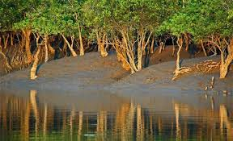
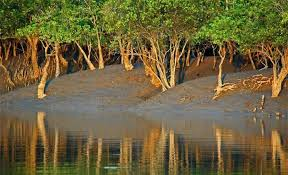
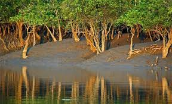
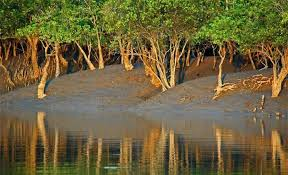
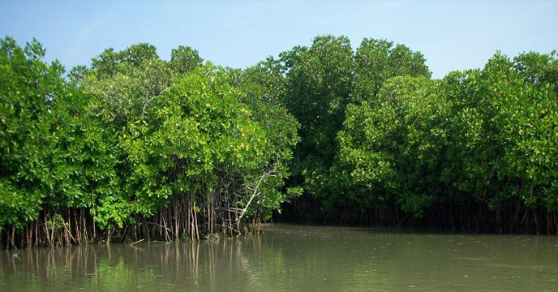

 

The Sundarbans is a mangrove area in the delta formed by the confluence of the Ganges, Brahmaputra and Meghna Rivers in the Bay of Bengal. It spans from the Hooghly River in India's state of West Bengal to the Baleswar River in Bangladesh. It comprises closed and open mangrove forests, agriculturally used land, mudflats and barren land, and is intersected by multiple tidal streams and channels. Four protected areas in the Sundarbans are enlisted as UNESCO World Heritage Sites namely Sundarbans National Park, Sundarbans West, Sundarbans South and Sundarbans East Wildlife Sanctuaries.[3] The Sundarbans mangrove forest covers an area of about 10,000 km2 (3,900 sq mi), of which forests in Bangladesh's Khulna Division extend over 6,017 km2 (2,323 sq mi) and in West Bengal, they extend over 4,260 km2 (1,640 sq mi) across the South 24 Parganas and North 24 Parganas districts.[4] The most abundant tree species are sundri (Heritiera fomes) and gewa (Excoecaria agallocha). The forests provide habitat to 453 faunal wildlife, including 290 bird, 120 fish, 42 mammal, 35 reptile and eight amphibian species.[5]
A total 245 genera and 334 plant species were recorded by David Prain in 1903.[28] While most of the mangroves in other parts of the world are characterised by members of the Rhizophoraceae, Avicenneaceae or Combretaceae, the mangroves of Bangladesh are dominated by the Malvaceae and Euphorbiaceae.[16] The Sundarbans flora is characterised by the abundance of sundari (Heritiera fomes), gewa (Excoecaria agallocha), goran (Ceriops decandra) and keora (Sonneratia apetala) all of which occur prominently throughout the area. The characteristic tree of the forest is the sundari (Heritiera littoralis), from which the name of the forest had probably been derived. It yields a hard wood, used for building houses and making boats, furniture and other things. New forest accretions is often conspicuously dominated by keora (Sonneratia apetala) and tidal forests. It is an indicator species for newly accreted mudbanks and is an important species for wildlife, especially spotted deer (Axis axis). There is abundance of dhundul or passur (Xylocarpus granatum) and kankra (Bruguiera gymnorhiza) though distribution is discontinuous. Among palms, Poresia coaractata, Myriostachya wightiana and golpata (Nypa fruticans), and among grasses spear grass (Imperata cylindrica) and khagra (Phragmites karka) are well distributed. The varieties of the forests that exist in Sundarbans include mangrove scrub, littoral forest, saltwater mixed forest, brackish water mixed forest and swamp forest.
The fertile soils of the delta have been subject to intensive human use for centuries, and the ecoregion has been mostly converted to intensive agriculture, with few enclaves of forest remaining. The remaining forests, together with the Sundarbans mangroves, are important habitats for the Bengal tiger (Panthera tigris tigris).[38] The forest also provides habitat for small wild cats such as the jungle cat (Felis chaus), fishing cat (Prionailurus viverrinus), and leopard cat (P. bengalensis).[39] Several predators dwell in the labyrinth of channels, branches and roots that poke up into the air. This is the only mangrove ecoregion that harbours the Indo-Pacific region's largest terrestrial predator, the Bengal tiger. Unlike in other habitats, tigers live here and swim among the mangrove islands, where they hunt scarce prey such as the chital deer (Axis axis), Indian muntjacs (Muntiacus muntjak), wild boar (Sus scrofa), and rhesus macaque (Macaca mulatta). It is estimated that there are now 180 Bengal tigers[30] and about 30,000 spotted deer in the area. The tigers regularly attack and kill humans who venture into the forest, human deaths ranging from 30–100 per year.[40]
The physical development processes along the coast are influenced by a multitude of factors, comprising wave motions, micro and macro-tidal cycles and long shore currents typical to the coastal tract. The shore currents vary greatly along with the monsoon. These are also affected by cyclonic action. Erosion and accretion through these forces maintains varying levels, as yet not properly measured, of physiographic change whilst the mangrove vegetation itself provides a remarkable stability to the entire system. During each monsoon season almost all the Bengal Delta is submerged, much of it for half a year. The sediment of the lower delta plain is primarily advected inland by monsoonal coastal setup and cyclonic events. One of the greatest challenges people living on the Ganges Delta may face in coming years is the threat of rising sea levels caused mostly by subsidence in the region and partly by climate change. In many of the Bangladesh's mangrove wetlands, freshwater reaching the mangroves was considerably reduced from the 1970s because of diversion of freshwater in the upstream area by neighbouring India through the use of the Farakka Barrage bordering Rajshahi, Bangladesh. Also, the Bengal Basin is slowly tilting towards the east because of neo-tectonic movement, forcing greater freshwater input to the Bangladesh Sundarbans. As a result, the salinity of the Bangladesh Sundarbans is much lower than that of the Indian side. A 1990 study noted that there "is no evidence that environmental degradation in the Himalayas or a 'greenhouse' induced rise in sea level have aggravated floods in Bangladesh"; however, a 2007 report by UNESCO, "Case Studies on Climate Change and World Heritage" has stated that an anthropogenic 45-centimetre (18 in) rise in sea level (likely by the end of the 21st century, according to the Intergovernmental Panel on Climate Change)
Part of the Sundarbans is shielded from tidal inflow by leaves and there one finds villages and agriculture. During the monsoon season, the low lying agricultural lands are waterlogged and the summer crop (kharif crop) is therefore mainly deepwater rice or floating rice. In the dry winter season the land is normally uncropped and used for cattle grazing. However, the lands near the villages are irrigated from ponds that were filled up during monsoon, and vegetable crops (Rabi crops) can be grown here.[69]
